1
定期テスト2週間前の学活
範囲が配られた日に、10分だけ時間を取ります。開いて、ボタンを押して、1日の勉強時間を選ぶ。それだけで全員の手元に計画ができます。「計画を立てなさい」と言うより早いです。
説明より先に、開いていただくのが早いと思います。下のボタンかQRコードから開いて、生徒のIDでログインしてみてください。3分あればひとまわりできます。
| だれとして入るか | ログインID | パスワード | 見えるもの |
|---|---|---|---|
| 生徒 | s001 〜 s008 |
study2026 |
自分の計画・進み具合・テスト範囲 |
| 先生 | t-yamaguchi |
sensei2026 |
範囲づくり・連絡・生徒全員の進み具合 |
生徒は s001＝佐藤陽菜、s002＝田中悠斗…と8人分あります。s001は計画が進んでいる状態、s004はまだ何も立てていない状態です。先生は t-mori／t-okada でも入れます。
s004／study2026 で入ると、計画がまだ空です。「計画を自動でつくる」を押して、1日の勉強時間を選んで作ってみてください。
終わったものは左の四角を押すだけ。上のバーが伸びます。行を押すと中が開くので、「1日おくらせる」も試してみてください。
いったんログアウトして t-yamaguchi で入り、「生徒の進み具合」を開きます。さっき自分が付けたチェックが、先生の一覧に出ています。
生徒がすることは4つだけです。計画を作る／チェックを付ける／日をずらす／範囲を見る。最初の画面に、テストまであと何日か、全体の何％が終わったかが出ます。
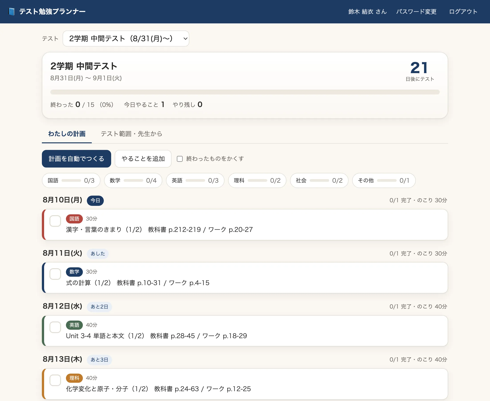
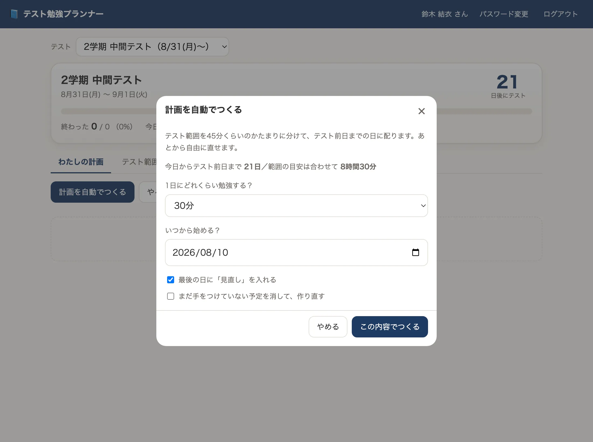
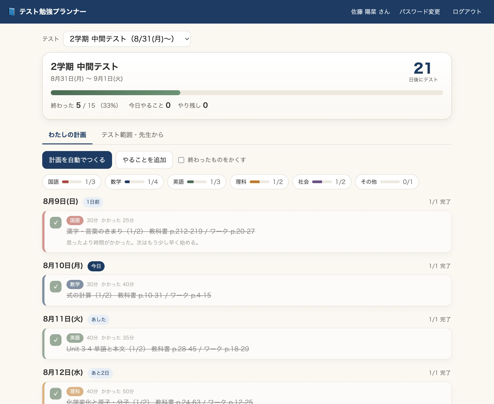
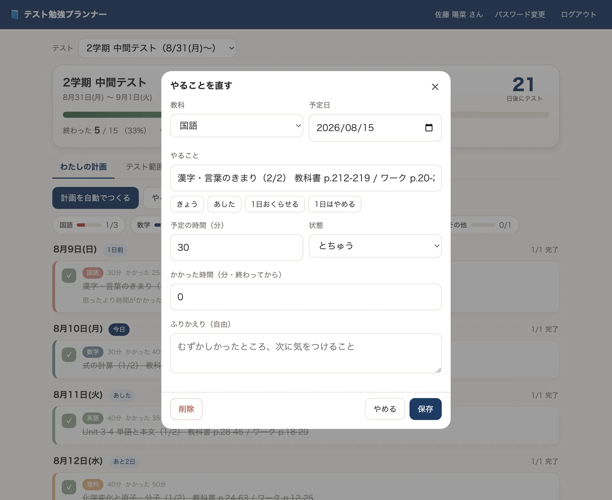
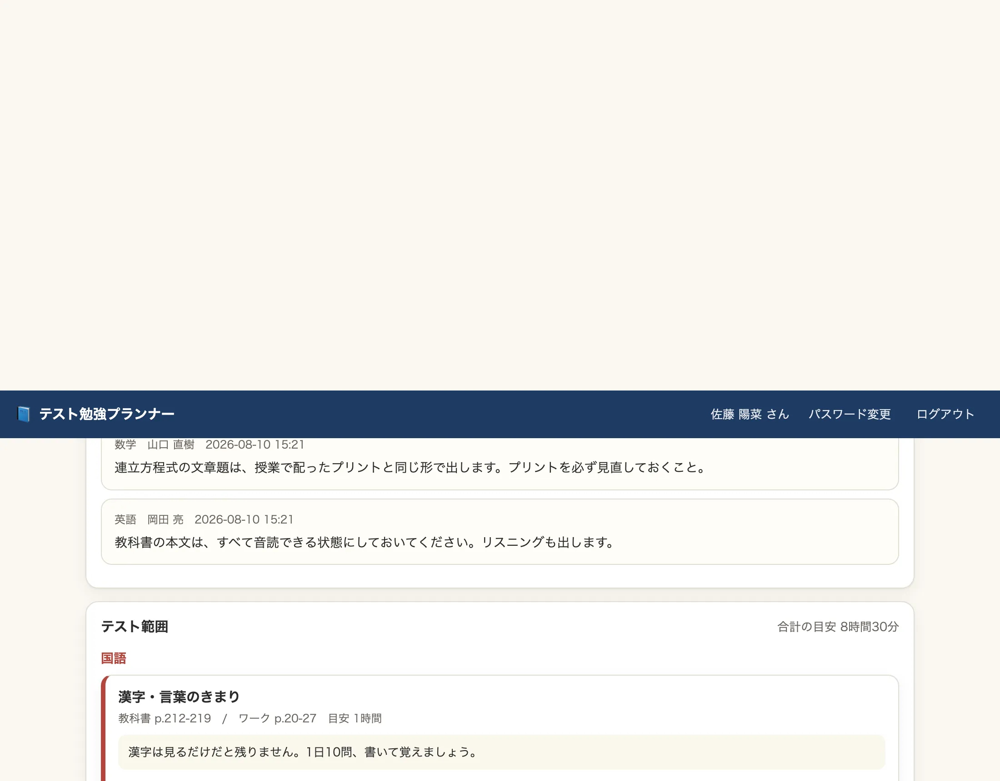
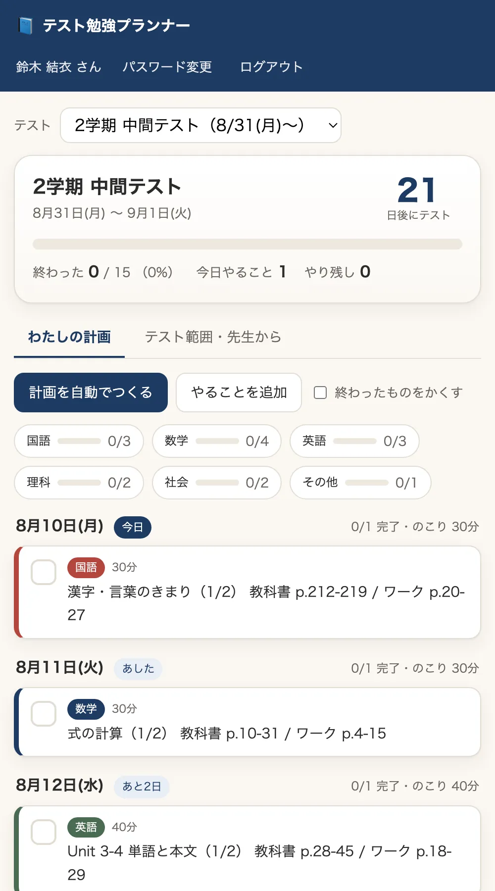
計画づくりのアプリは、たいてい「立てるところ」が重くて続きません。ここでは、立てるのはボタン1つ、直すのは1タップ、進めるのはチェックだけにしました。数字を入力させる場面を、できるだけ減らしています。
先生がすることも4つです。テストを作る／範囲を入れる／連絡を書く／進み具合を見る。範囲を入れる作業は、ふだん紙に書き出しているものを、そのまま打ち込む感覚です。
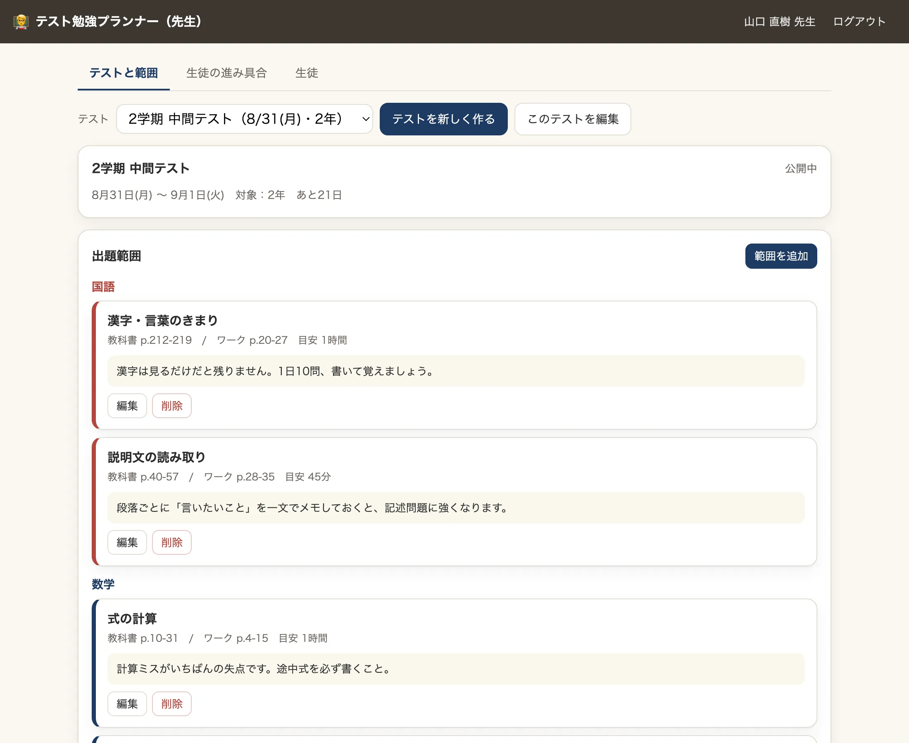
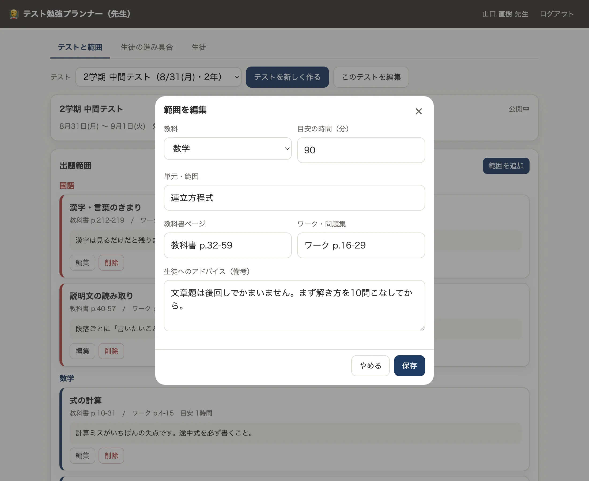
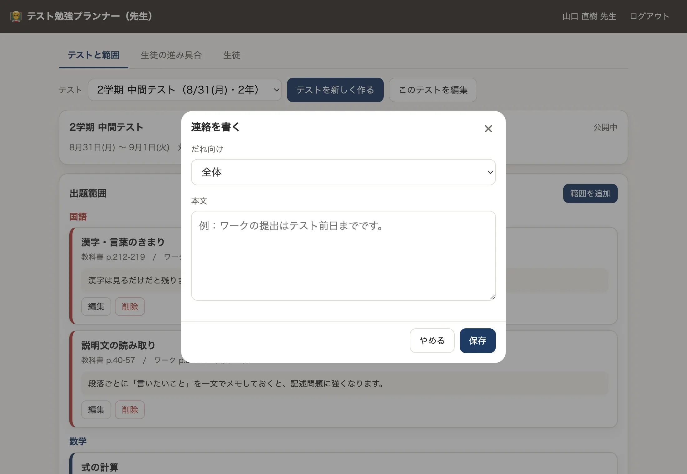
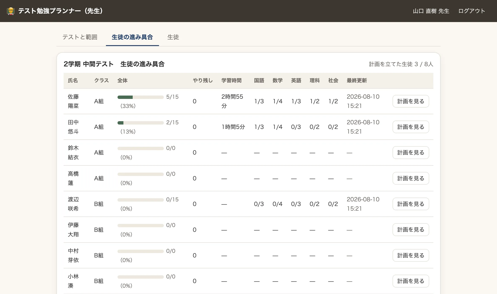
私が思いついた範囲で7つ挙げます。全部やる必要はありません。「これなら二学期にできそう」がひとつあれば十分です。
範囲が配られた日に、10分だけ時間を取ります。開いて、ボタンを押して、1日の勉強時間を選ぶ。それだけで全員の手元に計画ができます。「計画を立てなさい」と言うより早いです。
自動で出た計画を「たたき台」にして、部活の日・習い事の日を避けて自分で動かします。ゼロから紙に書かせるより、動かす作業のほうが取りかかりやすいようです。
範囲に「ワーク p.16-29（提出はテスト前日）」と入れておけば、提出物も計画の中に混ざります。別々に管理しなくてよくなります。
範囲と先生の一言が、教室にいなくても同じように届きます。どこまで進んだかも、本人が入れた分だけ先生に見えます。呼び出さなくても様子が分かるのは、この形の利点だと思います。
「大会が近い週は0分」と決めて、その日をよけて計画を組み直せます。時間が足りないことが目に見えるので、あきらめる話ではなく前倒しの話にできます。
「がんばっていません」ではなく、画面を一緒に見ながら「立てた計画のここで止まっています」と話せます。責める材料ではなく、次の一手を決める材料として。
「テスト初日」を「始業式」に読み替えれば、夏休みの宿題の計画にそのまま使えます。8月に入ってから慌てる子の様子も、先生の一覧で見えます。
これは「範囲」を「工程」に読み替えれば、行事準備でも研究発表の準備でも同じ形です。作り替えるのはAIの仕事なので、思いついたら注文するだけで済みます。
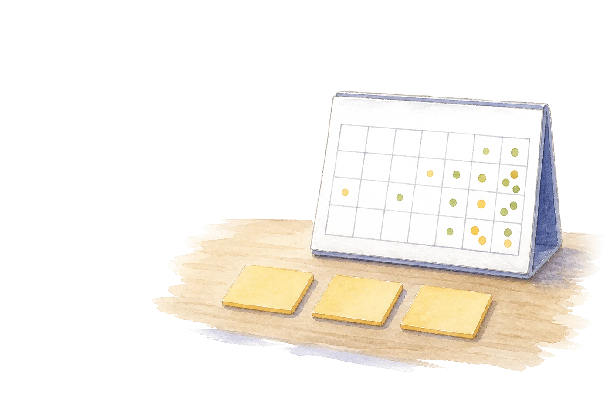
ここが研修の本題とつながるところです。私が書いたのはプログラムではなく、注文です。プログラムはAIが書きました。研修でお話しした「4つの部品」が、そのまま使えます。
Googleスプレッドシートを使って、生徒のテスト勉強の計画を進捗管理したり、 先生が指示を出したり、範囲を指定したりするためのWebアプリを作りたい。 【条件】 ・使うのはスプレッドシートとGASだけ。それ以外のツールは使わない ・バックエンドはGAS、表に出てくる画面はHTML ・ログインIDとパスワードで入れるようにする ・先生側の画面には、先生用のパスワードを別に作る ・先生は、教科を選び、テストの範囲を選び、 「こういうことを勉強しておいた方がいいよ」という備考を入れられる ・生徒側は分かりやすい画面で、計画を立て、どこまで終わったかを確認し、 計画を簡単に修正できる 【出してほしいもの】 ・コード一式 ・スプレッドシートを実際にセットアップするもの ・架空の生徒の名前を入れておく
この注文を、部品に分けると次のようになります。①役割＝（今回は省略）、②条件＝「スプレッドシートとGASだけ」「IDとパスワードで入る」「先生用は別」、③出力の形＝「コード一式とセットアップするもの」、④差し替え＝「テスト勉強の計画」の部分。ここを『学級の係活動』『行事の準備』に差し替えれば、別のアプリの注文になります。
| 工程 | やったこと | だれが |
|---|---|---|
| 何を作るか決める | 「生徒が計画を立てて進み具合を見る」「先生は範囲と一言を渡す」。ここを言葉にするのがいちばん時間がかかりました。 | 人 |
| 設計とコードを書く | シートの構成、ログインのしくみ、画面、計画を自動で組む計算。全部AI。 | AI |
| 動かして直す | 「1日の勉強時間を90分にしたのに30分ずつしか入らない」など、動かして気づいたことを注文として返す。 | 人が指摘・AIが直す |
| スプレッドシートに入れる | コードを貼り、初期セットアップを1回実行。架空の生徒8人とテスト1本が自動で入る。 | 人（5分） |
| 公開する | 「ウェブアプリとして公開」を選び、出てきたURLを配る。サーバーもドメインも要りません。 | 人（3分） |
最初に動くものが出るまでは1時間かかっていません。ただ、そこから「使えるもの」にするまでに、直しのやり取りが何度かありました。作るのは速く、詰めるのに時間がかかる。これはどの自作ツールでも同じです。
特別なデータベースは使っていません。アプリが読み書きしているのは、Googleドライブの中にあるスプレッドシート1つです。シートは6枚。先生が直接シートを書き換えても、アプリにそのまま反映されます。
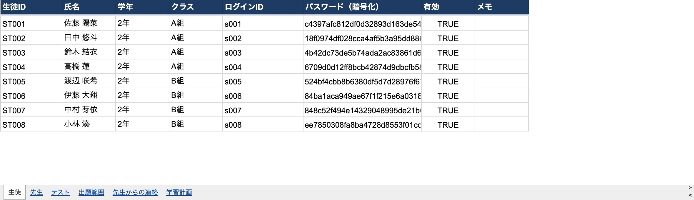
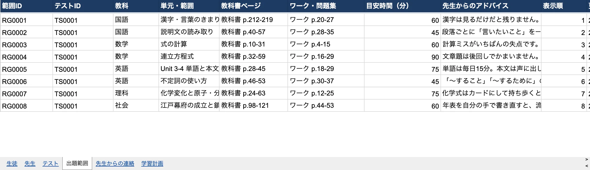
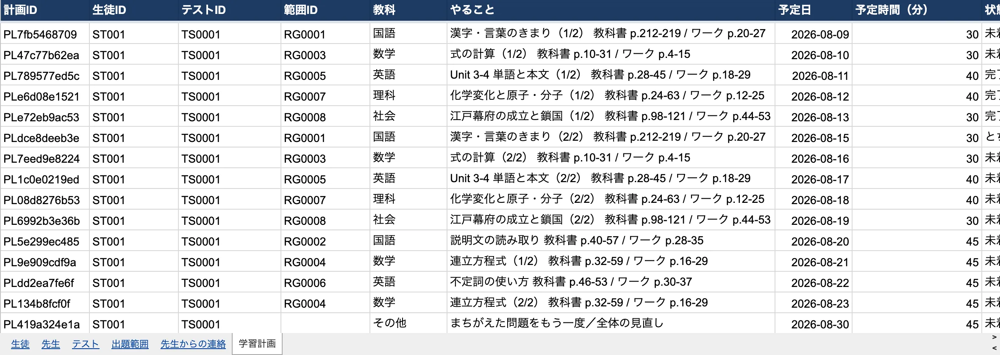
このお試し用のものは、みんなで触る見本です。実際に学級で使うなら、自分のGoogleドライブに自分のものを1つ作ります。手順は3つです。
新しいスプレッドシートを作り、「拡張機能 → Apps Script」を開いて、コードを貼ります。コードは私からお渡しします。
用意してある initialSetup を1回実行すると、シート6枚と見本のデータがそろいます。ここまで5分ほどです。
「デプロイ → ウェブアプリ」で公開し、出てきたURLを配ります。生徒の名簿を入れ、パスワードを発行して手渡せば始められます。
コード一式と手順書はお渡しできます。研修のアンケートの自由記述か、メールでお知らせください。中身を書き換えて使っていただいてかまいません。「ここが自分の学校に合わない」という話をいただければ、直したものをお返しすることもできます。
よく見せるために書かないでおく、ということはしたくないので、今できていないことを書いておきます。
学級やグループ単位でのテストの割り当て（いまは学年で分けています）。生徒から先生への質問。前回のテストとの比較。保護者向けの画面。どれも作れますが、まだ作っていません。
実際の学級で、生徒40人が一斉に使う状況をまだ試していません。使ってみて分かることのほうが多いはずなので、試された方の「ここが使いにくい」を聞かせていただけると直せます。
アプリを配れば計画が立つ、とは思っていません。計画の立て方は人が教えるものです。ここでやっているのは、書き写す手間と、どこまで進んだか分からなくなる不安を減らすところまでです。